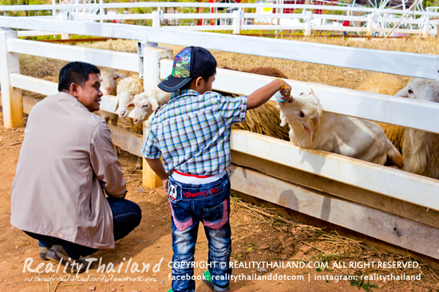

9 สถานที่ท่องเที่ยวในจังหวัดนครราชสีมา
นครราชสีมา หรือ “เมืองโคราช” ที่เรารู้จักกัน
เป็นจังหวัดที่มีอาณาเขตใหญ่ที่สุดในเมืองไทย
เต็มไปด้วยสถานที่ท่องเที่ยวมากมาย
โดยเฉพาะทางธรรมชาติและวัดวาอาราม ซึ่งเรา ได้รวบรวม
9 ที่เที่ยวเมืองโคราชที่คุณพลาดแล้วจะเสียใจ
โดยในบางแห่ง เราเชื่อว่าคุณแทบไม่รู้มาก่อน ว่ามันมีที่แบบนี้อยู่จริงๆ
|
1. ผาเก็บตะวัน อ.วังน้ำเขียว
ผาเก็บตะวัน อยู่ในเขตอุทยานแห่งชาติทับลาน มีทางขึ้นอยู่ด้านอำเภอวังน้ำเขียว
เป็นจุดชมพระอาทิตย์ตกที่สวยงามที่สุดแห่งหนึ่ง ไฮไลท์สำคัญของที่นี่ คือ การดีดหนังสติ๊ก
เป็นหนังสติ๊กขนาดใหญ่ ที่ให้เอาไว้ให้นักท่องเที่ยวได้เล่น แต่ไม่ใช่ดีดไปส่งเดชนะครับ
เพราะว่ากระสุนที่ใช้ มันคือเมล็ดพันธุ์ (ขายลูกละ 10 บาท) ที่ยิงออกไปไกลแค่ไหนก็แล้วแต่กำลัง
มันก็จะเจริญเติบโตเป็นต้นไม้ใหญ่ต่อไป ถือเป็นกุศโลบายชั้นเยี่ยม ที่คอยช่วยเหลือผืนป่าให้ยืนยาว
-
ที่ตั้ง : ตำบลไทยสามัคคี อำเภอวังน้ำเขียว จังหวัดนครราชสีมา
-
เปิดให้เข้าชม : 06.00-18.00 น.
-
ค่าเข้าชม : ผู้ใหญ่ 20 บาท เด็ก 10 บาท
-
โทร : อุทยานแห่งชาติทับลาน 0-3721-0340
-
facebook
-
วิธีเดินทางไป ผาเก็บตะวัน
|
ภาพรวม ผาเก็บตะวัน
2. ตลาดน้ำเขาใหญ่ อ.ปากช่อง
ตลาดน้ำเขาใหญ่ เป็นตลาดน้ำบนเนินเขาที่ใหญ่ที่สุดในประเทศไทย มีเจ้าของเป็นเจ้าเดียวกันกับตลาดน้ำสามพันนาม
(หัวหิน), ตลาดน้ำอโยธยา, ตลาดอโยเดีย และปางช้างอโยธยา โดยตลาดน้ำแบ่งออกเป็น 2 โซน คือโซนตลาดน้ำ
และโซนสวนดอกไม้ นักท่องเที่ยวที่มาเยือนจะได้พบกับความสวยงามของทุ่งดอกไม้สีเหลืองทีปกคลุม เขาตลอดทั้งปี
พร้อมสวนสัตว์ (mimi zoo) ท่าม กลางธรรมชาติ ซึ่งนักท่องเที่ยวจะได้พบกับเหล่าสัตว์น่ารักอันได้แก่ แกะ
กระต่าย อูฐ ที่นักท่องเที่ยวสามารถให้อาหารได้กับมือ นอกจากนี้ภายในตลาดยังมีสถานที่ถ่ายรูปสำหรับคู่รัก
(swiss Love) พร้อมที่จอดรถกว่า 200 คัน
-
ตลาดน้ำเขาใหญ่ (Khaoyai Floating Market) ตั้งอยู่ที่บ้านหนองนกกระเต็น อำเภอปากช่อง
จังหวัดนครราชสีมา
(เลยทอสคาน่ารีสอร์ท เลี้ยวซ้ายไปประมาณ 10 กม. ทางไปวัดภูหายหลง)
-
โทรศัพท์ 081 399 5555
-
อีเมล khaoyaifloatingmarket@gmail.com
-
เว็บไซต์
-
หรือตลิกที่นี้
|
ภาพรวม ตลาดน้ำเขาใหญ่
|
|

|
|
|
|

|
|
3. น้ำพุธรรมชาติ น้ำผุด ปากช่อง
น้ำผุดปากช่อง หรือ น้ำพุธรรมชาติบ้านท่าช้าง ตั้งอยู่ที่ ตำบลหมูสี อำเภอปากช่อง จังหวัดนครราชสีมา
เป็นตาน้ำที่มีน้ำผุดออกมาตลอดปี โดยธรรมชาติ น้ำที่ผุดขึ้นมาจะเป็นน้ำฝนที่ตกไปอยู่ในใต้ดิน
และก่อนที่จะผุดขึ้นมาจากผิวดินก็ได้กรองจากก้อนหินที่มีแคลเซียมคาร์บอเนตสูง
เลยทำให้น้ำมีความใสและมีสีฟ้าเขียว ที่มีความคล้ายกับ สระมรกต นั่นเอง
โดยน้ำผุดของที่นี่ จะมีบ่อหรือชั้นลดหลั่นกันไปเป็นบ่อๆ ลงมา ประมาณ 4 บ่อ
และมีฝายกันน้ำเพื่อให้เป็นน้ำตกที่สามารถลงเล่นน้ำได้ แต่เฉพาะบริเวณที่เป็นตาน้ำจะไม่อนุญาติให้ลงเล่น
การเดินทางเข้าไปที่น้ำผุดนี้ก็ไม่ลำบากเลย เพราะจะมีถนนทางเดินเล็กๆ มีสะพานข้ามต่างๆ
ส่วนบรรยากศรอบบ่อน้ำก็จะเต็มไปด้วยต้นไม้ ร่มรื่นมากๆ
นอกจากจะเป็นสถานที่ที่สามารถเล่นน้ำได้แล้ว ก็ยังเหมาะสำหรับการมานั่งปิคนิคและพักผ่อนชิลๆ อีกด้วย
บริเวณทางเข้าด้านหน้าจะมีร้านค้า ร้านขายอาหาร อยู่หลายร้านเลย สามารถนำเข้าไปทานข้างในได้เลย
แต่ห้ามนำเครื่องดื่มแอลกฮอลล์เข้าไปดื่ม ที่สำคัญต้องรักษาความสะอาด เพื่อที่สระน้ำจะได้ใสๆ สวยๆ
แบบนี้ไปนานๆ
น้ำผุดปากช่อง แห่งนี้ เหมาะกับการเล่นน้ำสุดๆ ไปเลย เพราะน้ำไม่ลึกจนเกินไป ไหลไม่แรงด้วย
ทำให้ค่อนข้างปลอดภัย แต่เห็นแบบนี้ ห้ามดื่มเข้าไปเด็ดขาด
เพราะมีความเป็นด่างสูงด้วยแคลเซียมคาร์โบเนต ต้องระมัดระวังกันดีๆ ถ้าใครที่มา โคราช แล้วไม่มาเที่ยว
น้ำผุดปากช่อง จะต้องเสียใจอย่างแน่นอน สถานที่สวยๆ แบบนี้ควรค่าแก่การมาเที่ยวมากๆ
ที่สำคัญใกล้กรุงเทพฯ อีกด้วย ไม่ต้องไปไกลถึงกระบี่เลย พูดมาขนาดนี้แล้ว ถ้าพลาดแล้วจะหาว่าไม่เตือน
-
ที่อยู่ : น้ำพุธรรมชาติบ้านท่าช้าง ( น้ำผุดปากช่อง ) ซอยโยธาธิการ ตำบลหมูสี อำเภอปากช่อง
จังหวัดนครราชสีมา
-
เปิดให้เข้าชม : 06.00-18.00 น.
-
โทร : -
-
เว็บไซต์ : -
-
หรือตลิกที่นี้
|
4. น้ำตกเหวสุวัต อุทยานแห่งชาติเขาใหญ่
น้ำตกเหวสุวัต ตั้งอยู่ที่ ตำบลหมูสี อำเภอปากช่อง จังหวัดนครราชสีมา เป็นน้ำตกชื่อดังที่หลายๆ
คนน่าจะรู้จักกันดีอยู่แล้ว เพราะเป็นน้ำตกที่อยู่คู่กับ น้ำตกเหวนรก ของ อุทยานแห่งชาติเขาใหญ่ นี่เอง
น้ำตกเหวสุวัต จะเป็นน้ำตกที่ตกจากหน้าผาสูง 20 เมตร มีจุดให้ชมวิวที่สามารถชมน้ำตก ได้สองส่วนด้วยกัน
ทั้งบนหน้าผา และด้านล่างน้ำตกที่เป็นแอ่งน้ำและลำธาร โดยน้ำตกที่นี่สามารถลงเล่นน้ำได้
แต่ในหน้าฝนน้ำจะมากและไหลแรง ค่อนข้างอันตราย เลยไม่ควรลงเล่นน้ำในหน้าฝน
แต่ถ้ามาในฤดูน้ำน้อย จะสามารถเดินเข้าไปยังโพรงถ้ำเล็กๆ ใต้หน้าผาน้ำตกได้เลย น้ำตกเหวสุวัต นี้
จะอยู่สุดถนนธนะรัชต์ ถ้าขับรถมารับรองว่าไม่มีหลง เพราะจะมีป้ายบอกทางชัดเจนตลอดเส้นทาง
หรือถ้าชอบเดินศึกษาธรรมชาติ เดินไปตามป่าเขา ก็สามารถเดินจากลานกางเต็นท์ บริเวณ น้ำตกผากล้วยไม้
ไปได้เลย ระยะทางก็ราวๆ 4 กิโลเมตร ถูกใจสายลุยอย่างแน่นอน
บริเวณใกล้ๆ น้ำตก จะมีต้นไม้สวยงามที่ทนต่อสภาพน้ำท่วมขัง และน้ำที่ไหลเชี่ยวขึ้นอยู่หลากหลาย ไม่ว่าจะเป็น
ต้นไคร้น้ำ ไคร้มด ไทรน้ำ มะเดื่อน้ำ และ ส้านน้ำ อีกด้วย ใครชอบดูพืชพรรณต่างๆ ก็น่าจะสนใจเลย
ส่วนใครที่จะเข้าไปเที่ยวชม น้ำตกเหวสุวัต นี้ ทางอุทยานฯ
จะไม่อนุญาตให้นำอาหารเข้าไปรับประทานในบริเวณน้ำตก
และควรเล่นน้ำตกอย่างระมัดระวังกันด้วย
เพราะแอ่งน้ำจะมีความลึกอยู่พอสมควร ต้องปฏิบัติตามกฎของอุทยานฯ และช่วยกันรักษาความสะอาด
เพื่อรักษาความสวยงามของที่นี่กันไว้
- ที่อยู่ : น้ำตกเหวสุวัต ตำบลหมูสี อำเภอปากช่อง จังหวัดนครราชสีมา
-
เปิดให้เข้าชม : 07.00-21.00 น.
-
โทร : 0-86092-6531
-
หรือตลิกที่นี้
|
5. วัดโนนกุ่ม (วัดหลวงพ่อโต) อ.สีคิ้ว
วัดโนนกุ่ม หรือวัดหลวงพ่อโต ตั้งอยู่ริมถนนมิตรภาพ อำเภอสีคิ้ว ห่างจากตัวเมืองนครราชสีมาประมาณ 42
กิโลเมตร
เป็นที่ ประดิษฐานรูปหล่อทองเหลืองรมดำ หลวงพ่อโต (สมเด็จพระพุฒาจารย์โต พรหมรังสี)
ที่มีขนาดใหญ่ที่สุดในโลก โดยผู้ที่ก่อตั้ง วัดเนินกุ่ม ก็คือ คุณสรพงษ์ ชาตรี
ดาราภาพยนตร์ชื่อดังในประเทศไทย โดยผู้ที่มาวัดนี้นอกจากจะได้สักการะ ขอพรจาก หลวงพ่อโต แล้ว
ยังได้สัมผัสกับสิ่งก่อสร้างภายในวัดและสวนหย่อมที่ตกแต่งไว้อย่างสวยงาม
ภายในวัดแห่งนี้นอกจากเราจะมากราบไหว้หลวงพ่อโต
เพื่อความศิริมงคลและยังมีโรงอาหารหรือโรงทานให้รับประทานอาหาร และบริจาค เงินตามกำลังศรัทธา
บริเวณโดยรอบจะมีอุทยานสวนหย่อมต่างๆ ที่สวยงามและร่มรื่นให้นั่งพักผ่อน
การเดินทางไปวัดโนนกุ่ม (วัดสรพงษ์)
วัดโนนกุ่มนี้ตั้งอยู่ริมถนนมิตรภาพฝั่งขาเข้าโคราช ในเขตอำเภอสีคิ้ว อย่างห่างจากตัวเมืองโคราชประมาณ 45
กิโลเมตร ถ้าเดินทางจาก กทม.ไปทางอีสาน ก่อนถึงโคราช 45 กม.ในเขต อ.สีคิ้ว
ตามถนนมิตรภาพฝั่งเข้าเมืองโคราชจากกรุงเทพ พอถึง อำเถอสีคิ้ว ขับรถผ่านตัวเมืองมาประมาณ 1 กม.
จะเห็นได้แต่ไกล เพราะมหาวิหารหลังใหญ่มาก วัดหลวงพ่อโตอยู่ด้านช้ายมือ หากเดินทางมาจากโคราช ตามถนนมิตรภาพ
ต้องไปกลับรถในตัวเมืองสีคิ้วเพื่อกลับเข้าเมืองโคราชออกจากตัวเมืองประมาณ 1 กม.
วัดหลวงพ่อโตอยู่ด้านช้ายมือ
หรือตลิกที่นี้
รายละเอียดสอบถามได้ที่ มูลนิธิสมเด็จพระพุฒาจารย์โต โทร. 081-6401281, 081-9110622
|
ภาพรวม วัดโนนกุ่ม1
6. อุทยานประวัติศาสตร์พิมาย
อุทยานประวัติศาสตร์พิมาย จะมีค่าเข้าชมสำหรับคนไทย 20 บาทเท่านั้น ภายในอุทยานประวัติศาสตร์
ถือเป็นแหล่งโบราณคดีที่สำคัญทางประวัติศาสตร์อีกที่หนึ่งเลยก็ว่าได้
ด้านในก็จะประกอบไปด้วยโบราณสถานสมัยขอมทั้งหมด ตั้งแต่ชิ้นเล็กๆ ไปจนถึงชิ้นส่วนใหญ่โตมากๆ
แม้จะไม่อลังการเท่า ปราสาทหินพนมรุ้ง จังหวัดบุรีรัมย์ แต่ก็ถือว่าใหญ่โตโอ่อ่า และคงความสมบูรณ์ไม่แพ้กัน
ความเชื่อ และ สถาปัตยกรรม
ปราสาทหินพิมาย สร้างขึ้นตามความเชื่อเกี่ยวกับสวรรค์ และโลกมนุษย์
ที่นี่เป็นปราสาทหินทรงขอมโบราณแบบบาปวน สร้างขึ้นในสมัยพระเจ้าสุริยวรมันที่ 1 ราวๆ พุทธศตวรรษที่ 16
เพื่อใช้เป็นเทวสถานของศาสนาพราหมณ์นั่นเอง
ลักษณะผังของปราสาทหินพิมายนั้นสร้างขึ้นคล้าย เขาพระสุเมรุ มีองค์ปราสาทประธาน ซึ่งอยู่ใจกลางของเทวสถานค่ะ
อีกทั้งปราสาทหินพิมาย เป็นปราสาทหินที่มีขนาดใหญ่ที่สุดในประเทศไทยอีกด้วย
ทำให้ที่นี่เป็นหนึ่งในสถานที่ท่องเที่ยวสำคัญของจังหวัดนครราชสีมา
การเดินทางไปยัง ปราสาทหินพิมาย นั้นไม่ยากเลย ที่นี่ตั้งอยู่ใน อุทยานประวัติศาสตร์พิมาย อำเภอพิมาย
ซึ่งห่างจากตัวเมืองนครราชสีมาประมาณ 60 กิโลเมตรเท่านั้น ถ้าขับรถไปชิลๆ ประมาณ 40 นาทีก็ถึงแล้ว
โดยภายในสถานที่จะแบ่งเป็น 2 จุดใหญ่ๆ ด้วยกันคือ ในส่วนของโบราณสถาน และส่วนพิพิธภัณฑสถานแห่งชาติ
- ที่อยู่ : ตำบลในเมือง อำเภอพิมาย จังหวัดนครราชสีมา
- เปิดให้เข้าชม : 07.00-18.00 น
- ค่าเข้าชม :
ชาวไทย 20 บาท
ชาวต่างชาติ 100 บาท
ยกเว้นค่าเข้าชมสำหรับนักเรียน/นักศึกษาในเครื่องแบบ และภิกษุสามเณร
- โทร : 0-4447-1568
-
หรือตลิกที่นี้
|
7. ตลาด Save One
หากพูดถึงการช้อปแล้วหลายๆ คนคงนึกถึง ตลาดรถไฟรัชดา ตลาดนัดสะพานพุทธ หรือ จตุจักร โดยส่วนใหญ่นั้นจะอยู่ใน
กรุงเทพฯ เกือบทั้งหมด แต่รู้ไหมว่าในโคราชก็มีตลาดกลางคืนสุดฮอตอยู่เหมือนกัน ที่ ตลาด Save One ค่ะ
ที่นี่เป็นตลาดกลางคืนที่ใหญ่ และมีของครบครันสุดๆ ในภาคอีสานเลยทีเดียว เป็นพื้นที่สำหรับนักช้อป
และนักชิมตัวยง ใครที่กำลังจะไปเที่ยวโคราช หรือหาแหล่งช้อปอยู่ ตามมาเช็คอินที่นี่ได้เลย
สำหรับ นักช้อป จะมีโซนให้เลือกเดินหลากหลายแต่งหน้า ทำผม แฟชั่นต่างๆ ขอแนะนำ โซนเปิดท้ายแบบหลากหลายสไตล์
คนที่ชอบเสื้อผ้า กระเป๋า รองเท้า อุปกรณ์สำหรับขายของ โซนพาวิลเลี่ยม และโซนวินเทจ
(จะมีพระเครื่องและของเก่ารวมอยู่ด้วย) ซึ่งจะมีเสื้อผ้าและของต่างๆ หลากหลายแนว
โดยสามารถเลือกได้ตามความชอบ หรือสไตล์ของแต่ละคนเลย
ส่วนใครที่อยากได้ต้นไม้หรือว่าหนังสือ ที่นี่ก็มีร้านหนังสือร้านต้นไม้หลากหลายสายพันธุ์ ปุ๋ย และหนังสือ
มีตั้งแต่หนังสือการ์ตูน ไปจนถึงหนังสือเพลงมากมายให้เราเลือกได้อย่างจุใจ
แต่ถ้าใครเป็นคนรักสัตว์ล่ะก็ ต้องเป็นโซนสัตว์เลี้ยงเลยค่ะ เพราะว่าที่นี่มีตั้งแต่ไรน้ำไปจนถึง สัตว์แปลกๆ
เลยทีเดียว รวมถึงยังมีอาหาร และอุปกรณ์สำหรับคนรักสัตว์ เรียกได้ว่าไม่ต้องไปไหนไกลกันเลย
-
ตลาด Save One โคราช
-
ที่อยู่ : 1485/1 ถนนมิตรภาพ อ.ในเมือง จ.นครราชสีมา
-
ตลาดเปิดบริการ : ทุกวัน เวลา 16.00-23.00 น.
-
โทร : 0-4422-2588
-
เว็บไซต์
-
หรือตลิกที่นี้
|
8. วัดศาลาลอย
วัดศาลาลอย เป็นวัดเก่าแก่คู่บ้านคู่เมืองโคราช ที่ท้าวสุรนารีสร้างขึ้นภายหลังจากรบชนะกองทัพของเจ้าอนุวงศ์
เมื่อปี พ.ศ.2370 เป็นสถานที่ศักดิ์สิทธิ์ที่ชาวโคราชเคารพนับถือเป็นอย่างมากเป็นเวลากว่า 200 ปี เลยทีเดียว
ความโดดเด่นของวัดนี้อยู่ที่ พระอุโบสถ ซึ่งสร้างแบบศิลปะไทยประยุกต์ เป็นรูปสำเภาโต้คลื่น
และมีการใช้วัสดุพื้นเมือง คือกระเบื้องดินเผาด่านเกวียน มาประดับตกแต่งอย่างสวยงาม ภายในมีพระประธาน
พระนามว่า "พระพุทธประพัฒน์สุนทรธรรมพิศาล ศาลาลอยพิมาลวรสันติสุขมุนินทร์" ปูนปั้นสีขาว ปางห้ามสมุทร
เป็นพระพุทธรูปยืนประทับ ณ ประตูเมืองสังกัสนคร
-
ที่อยู่ : ซอยท้าวสุระ 3 ตำบลในเมือง อำเภอเมือง จังหวัดนครรราชสีมา
-
เปิดให้เข้าชม : 08.00-18.00 น
-
ค่าเข้าชม : -
-
โทร : -
-
เว็บไซต์ :
-
หรือตลิกที่นี้
|
9. จุดชมวิว กังหันลม เขายายเที่ยง
อีกหนึ่งจุดชมวิวที่สวยมากๆ ในโคราชก็คือ จุดชมวิว กังหันลม เขายายเที่ยง แห่งนี้
ซึ่งจะมีกังหันลมขนาดใหญ่ บริเวณอ่างเก็บน้ำให้เราได้ถ่ายรูปสวยๆ
ตั้งอยู่บนยอดเขาในพื้นที่ของการไฟฟ้าฝ่ายผลิตแห่งประเทศไทยนั่นเอง
บริเวณอ่างเก็บน้ำจะมีนักท่องเที่ยวนิยมมาถ่ายรูปสวยๆ และปั่นจักรยานเล่น รับลม ชมวิวอีกด้วย
เป็นอีกที่เที่ยวลับของโคราชที่ต้องไม่พลาดแวะไปเช็คอินกันดูค่ะ
-
ที่อยู่ : ตำบลคลองไผ่ อำเภอสีคิ้ว จังหวัดนครราชสีมา
-
เปิดให้เข้าชม : 08.00-18.00 น.
-
ค่าเข้าชม : -
-
โทร : -
-
เว็บไซต์ :
-
หรือตลิกที่นี้
|